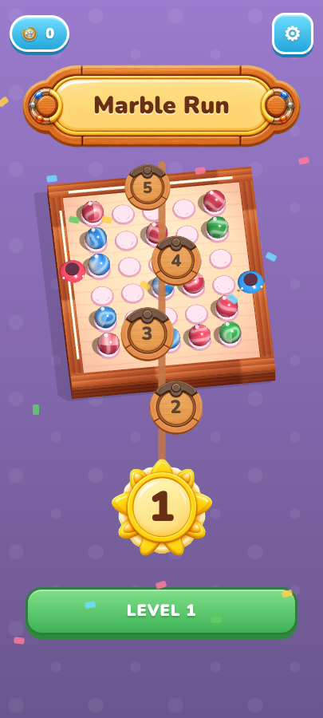
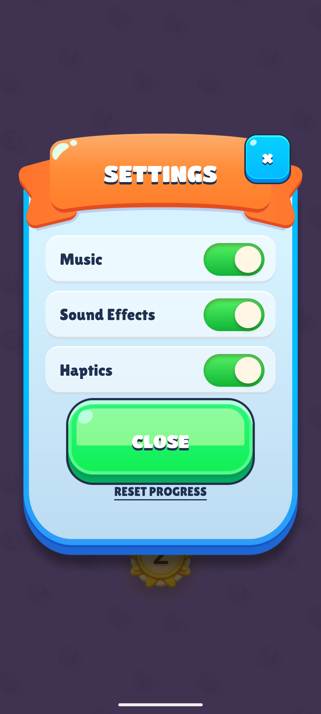
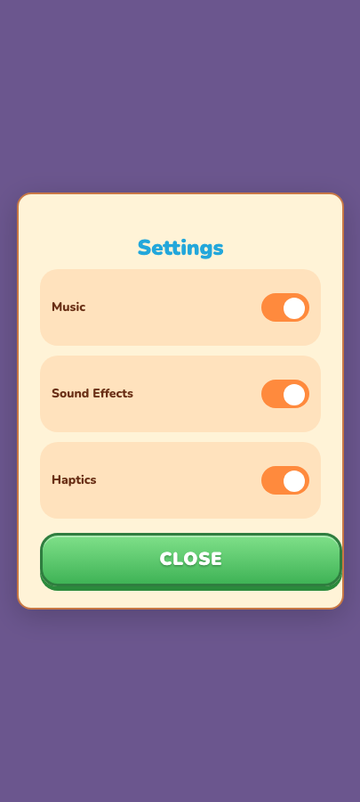
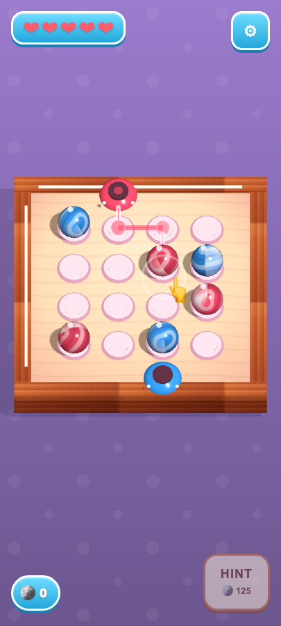
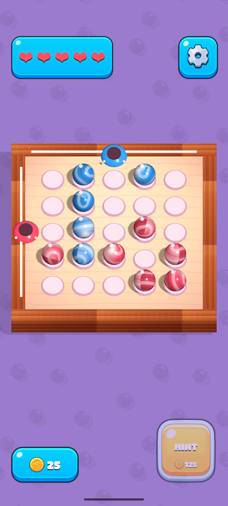
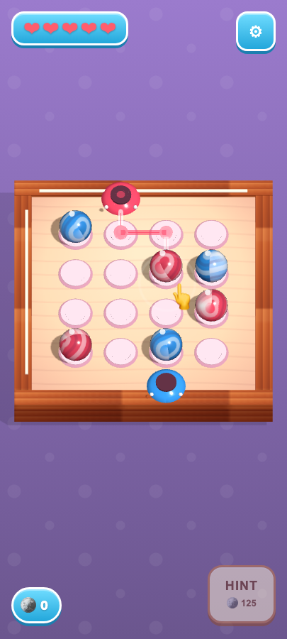

menu
layout · palette · chrome (coin pill + gear, wooden banner, saga chain, single green LEVEL button)


Harness-produced (card KEghp3x4 §1). Left: real Android device captures (adb lane) from refs/captures/android-basegamelab/. Right: v2 marble_run driven through the four reference-locked states in one continuous harness session (SharedShellDriver real clicks + collectRun). Every v2 frame is a Chromium/browser capture.
layout · palette · chrome (coin pill + gear, wooden banner, saga chain, single green LEVEL button)

chrome character (v1 = MODAL over dimmed menu; blue card, orange ribbon, X close, green toggles)


layout · palette (top-down board; hearts TL, gear TR, coin pill BL, HINT+125 BR)


palette · motion (same board, ambient animation reference)

